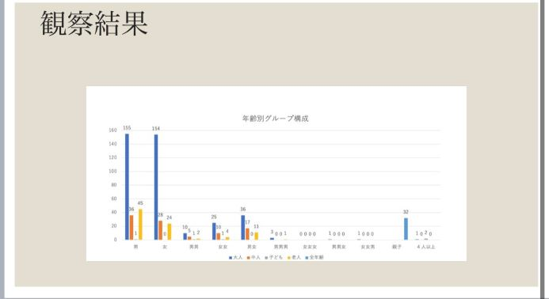

観察結果
①結果


- 一番多かった人数構成は一人だった。男女別で見てみても一人で来ている人が多かった。また、ペットの散歩も多く見られた。
- 次に多かったのは２人で来ている人だった。
- ふたりできているひとは男女で来ている人が多かった。これは学生の下校のカップルや、老夫婦の散歩が多かった。
- ３人以上出来ている人は少なかった。
- 親子で来ている人も多く見られた。
- ２人以上が少ない理由として、ショッピングセンターが近いため１人で来ている人が多いのではないか。
- 学生や若者が多いと思っていたが、高齢者が多かったのは学生は部活などの放課後活動でまだ下校時間ではなかったのではないか。
- 高齢者や親子連れが多かったので、ここは散歩などに適している場所なのではないか。
- 会社が周りに多いため、その移動でここの道を通るので一人の人が多く見られたのではないか。
- ※調査には関係ないが、半袖短パンの小学生が多くいた。寒そうだった。